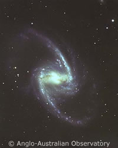
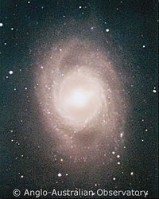
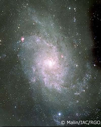

The origin of the spiral arms in galaxies is not as easy to identify as one may first think. After all, whatever it is that creates the spiral arms must be able to account for a wide variety of spiral structures. Some galaxies have a well-organised spiral structure (grand design spirals), while others are patchy (flocculent spirals). The arms may be wound tightly around the galaxy or may be more open. Some spiral arms originate at the end of bars, others directly from the galactic bulge.
|
 |
 |
 |
| Models for the origins of spiral arms must be able to account for a wide variety of spiral structures. Credit: AAO/David Malin/IAX/RGO | ||
There are three main models that have been developed to explain the origin of spiral arms. The first is that the spiral structure was somehow created with the galaxy and has always existed in that form. Unfortunately this model immediately runs into problems since galaxies exhibit differential rotation. If this were the correct model, and given the ages of the galaxies, all of the spiral arms should have wound tighter and tighter to the point where they would have disappeared by now. This is known as the winding problem.
A second, more successful model is the density wave model where the spiral arms are regions in the galactic disk that are denser than average. As the dust and gas piles up in these overdense regions, star formation is triggered, resulting in the neat, ordered arms of grand design spirals.
The third model, the self-propagating star formation model, has regions of star formation stretched into spiral patterns by the differential rotation of the galaxy. This model does not suffer the same problems as the winding model since these regions of star formation are only temporary, appearing and disappearing on timescales much shorter than the life of the galaxy. This model is complimentary to the density wave model and is successful in explaining the origins of the more patchy flocculent spirals.
No single model can explain the production of all types of spiral arms, and astronomers now think that a combination of both the density wave model and the self-propagating star formation model may be at work.